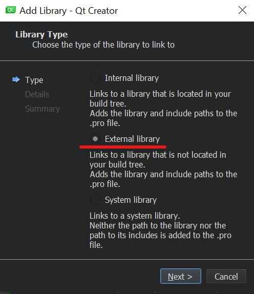
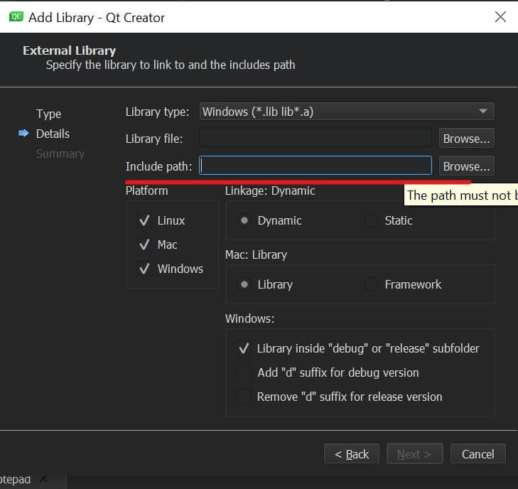
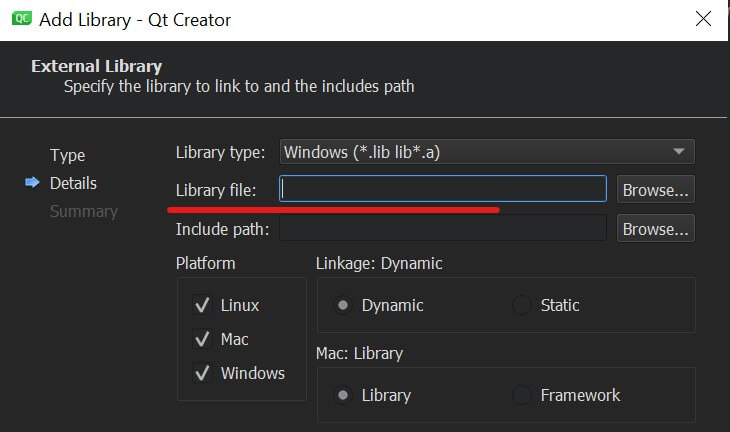

QT 添加第三方库
如果要在 QT 中使用第三方库，需要将相关库文件路径写入项目 pro 文件内，有两种方式：GUI 对话框添加或直接编辑 pro 文件。
GUI 添加
使用 GUI 添加的好处是比较直观，使用鼠标点击即可。
右键项目名称，点击 add library：
选中 external library 点击 next：

选择头文件所在目录路径：

如果有 lib 库文件的话需要链接进来，没有的话可以不设置：

其他保持默认然后点击 next 完成添加。
我们打开 pro 文件可以看到在文件最后添加了相关内容：
win32:CONFIG(release, debug|release): LIBS += -L$$PWD/../../../Library/boost_1_72_0/stage/lib/ -llibboost_filesystem-mgw81-mt-x32-1_72.dll
else:win32:CONFIG(debug, debug|release): LIBS += -L$$PWD/../../../Library/boost_1_72_0/stage/lib/ -llibboost_filesystem-mgw81-mt-x32-1_72.dlld
else:unix: LIBS += -L$$PWD/../../../Library/boost_1_72_0/stage/lib/ -llibboost_filesystem-mgw81-mt-x32-1_72.dll
INCLUDEPATH += $$PWD/../../../Library/boost_1_72_0
DEPENDPATH += $$PWD/../../../Library/boost_1_72_0pro 文件添加
根据添加一个第三方库所增加的语句，我们可以手动直接编辑 pro 文件完成添加：
LIBS指定 lib 库文件路径，没有的话不需要定义INCLUDEPATH指头文件所在目录DEPENDPATH定义和头文件相同目录即可
例如我们添加一个 boost filesystem 库到项目：
LIBS += -L"/path/to/boost_1_72_0/stage/lib/" \
-llibboost_filesystem-mgw81-mt-x32-1_72 \
-llibboost_regex-mgw81-mt-x32-1_72
INCLUDEPATH += "/path/to/boost_1_72_0"
DEPENDPATH += "/path/to/boost_1_72_0"LIBS 中，使用 -L 添加 lib 库目录，使用 -l 添加具体某个库文件，可以不写文件后缀。
以上就是 QT 中添加第三方库的方法。
标签：无